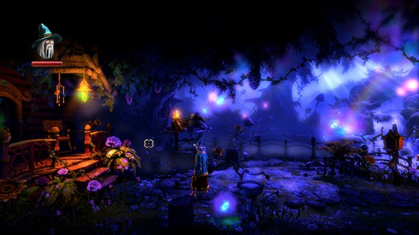
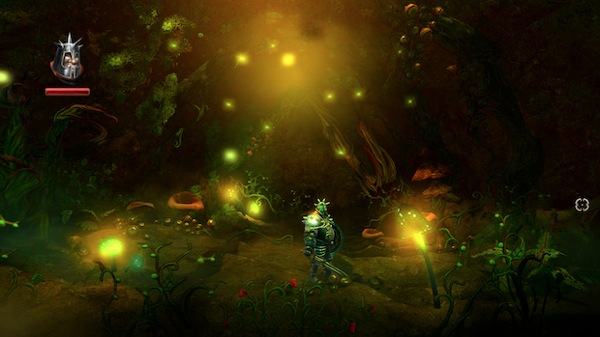
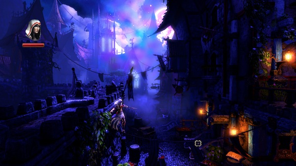

至从换了mac，就很久没玩游戏了。前些天在网上搜了一堆游戏，搜到《三位一体2》，貌似画面还不错，就下下来试试。结果一打开游戏，就被华丽丽的画面震撼了，恨不得每走一步都截图一张。其实我挺不擅长这类横板过关游戏，跳来跳去什么的最烦了。不过这个游戏，光看着画面就够心旷神怡的，操作又流畅，多跳几次也没关系。除此以外，还需要运用物理法则来通过一些机关障碍。刚开始玩，已经忍不住截了一堆图，每一张都美轮美奂到可以拿来做桌面。

《三位一体2》是横版动作游戏《三位一体》的续作。该作除了拥有精致的游戏画面之外，真正令玩家心动的是来自精致的物理效果，和容易上手却充满细节的绝佳操作手感，只要运用键盘上的WASD键加上鼠标，就能让游戏角色做出各种灵活的动作。而优美流畅的人物动作，加上芬兰电玩配乐大师阿普金尼精心擘画的乐 曲，搭配层次鲜明、色彩绚丽的游戏美术风格，可以让你细细品味与不死大军战斗的过程。

游戏内容除了和不死大军进行激烈战斗外，你还必须发挥智慧解开各种机关或是克服地形障碍，才能一路往目标前进，寻找拯救王国的办法。例如眼前有无法步行通 过的毒沼或刀山，可以让法师召唤箱子当立足点，对技术有自信的话也可用盗贼从上空横越；有的地方则是需要骑士砍断绳索让巨石撞出通路。当然离终点愈近，环 境就会变得愈崎岖，需要更多技巧才能过关，但是没有必然的步骤必须遵守，只要根据物理法则来思考，每个场景都有多种的通过方式。在《三位一体2》中共有法师、盗贼、骑士等三位主角，玩家可随时从中切换操纵的对象，体验完全不同的游戏风格，也可和好友分别操作不同角色，体验共同闯关的乐趣。

那天想试multi player，插上手柄发现没有认出来，改天再试试，看能不能两个人一起玩，或者局域网连机玩。这款游戏，如果有3D眼镜，还支持3D版模式。

这个场景，是用盗贼攀住悬挂的木头，上面会有圣水流下来，因为圣水的滋润，左边的蘑菇就长大长高了。很久没有玩过这么唯美的游戏，值得推荐。